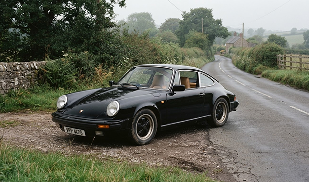

John O’Reilly’s Cars
Cars
Collection
John's opinion
© 2026 John O’Reilly. All cars subject to enthusiastic inspection.
A PERSONAL COLLECTION, PLAINLY PRESENTED
Find a car you'll want to keep.
Browse John's hand picked cars from useful modern classics
to the ones that make absolutely no practical sense.
View recommended cars
See the collection
